Gratis y sin cuenta. Abrí iona.ar/ultimateclock en el navegador del celular o la tablet.
Funciona sin internet. Abrila una vez con señal; después anda aunque en la cancha no haya.
Instalala como app. iPhone: botón Compartir → Agregar a inicio. Android: menú ⋮ → Instalar app. Queda un ícono como cualquier otra app.
Tus datos quedan en tu teléfono. No se suben a ningún lado. Si borrás los datos del navegador, se borran. Para conservarlos, exportalos (ver Planilla y Torneos).
Consejo: antes del partido subí el volumen y tocá MENU → PROBAR SONIDO. Si no lo escuchás, revisá que el teléfono no esté en silencio.
2. Empezar un partido
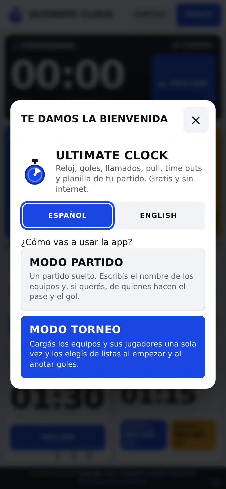
Bienvenida
La primera vez aparece la bienvenida. Elegí el idioma y cómo vas a usar la app:
MODO PARTIDO: un partido suelto. Escribís los nombres a mano.
MODO TORNEO: cargás los equipos y jugadores una vez y después los elegís de una lista. Ver Modo torneo.
Si no sabés cuál, elegí MODO PARTIDO.
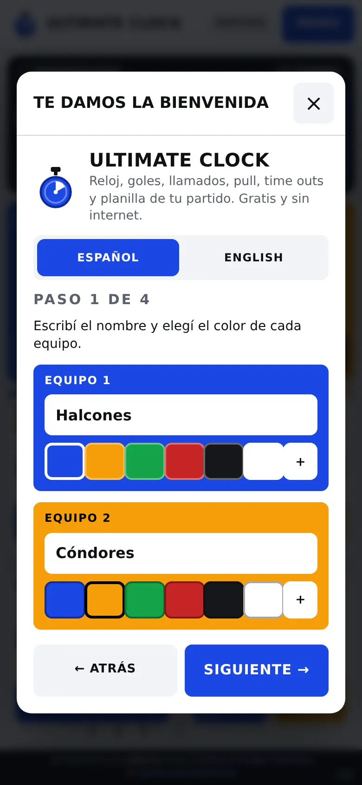
Paso 1: equipos
Paso 1 · Equipos
Escribí el nombre de cada equipo y tocá un color. El + abre más colores. Tocá SIGUIENTE →.
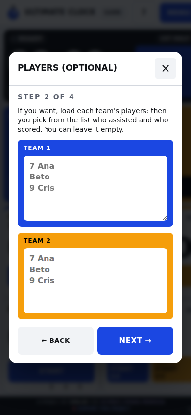
Paso 2: jugadores (opcional)
Paso 2 · Jugadores (opcional)
Si querés saber quién hizo cada gol, escribí un jugador por renglón. El número de camiseta va adelante y es opcional:
7 AnaBeto9 Cris
Si no te interesa, dejalo vacío y seguí.
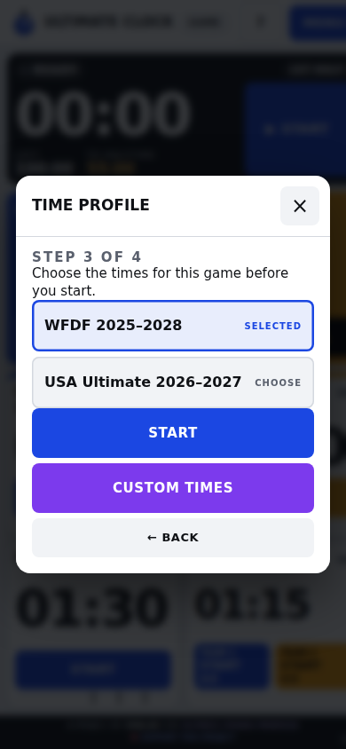
Paso 3: tiempos
Paso 3 · Tiempos
Elegí el reglamento: WFDF (el más usado en Argentina) o USA Ultimate. Si tu torneo usa otros tiempos, tocá TIEMPOS PERSONALIZADOS y cargalos.
Tocá EMPEZAR. Listo: estás en el tablero.
Para el próximo partido: MENU → ＋ NUEVO PARTIDO. Se repiten estos pasos con los datos anteriores ya cargados.
3. El tablero
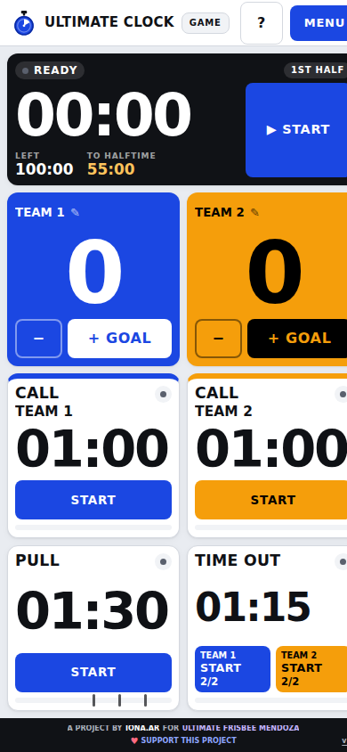
Tablero listo para empezar
Todo entra en una pantalla, de arriba hacia abajo:
Reloj del partido (negro). ▶ INICIAR / II PAUSAR. Abajo: cuánto RESTA del partido y cuánto falta AL DESCANSO.
Equipos con su tanteador. + GOL suma; − resta (pide confirmar). El lápiz ✎ cambia nombre y color.
Llamado de cada equipo: cuenta el tiempo para reanudar después de una falta u otro llamado.
Pull: cuenta 90 segundos para hacer el pull.
Time out: un botón por equipo, con los time outs que le quedan (por ejemplo 2/2).
Arriba a la derecha dice si estás en PARTIDO o TORNEO.
El único reloj que se pausa es el del partido. Pull, llamado, time out y medio tiempo corren hasta terminar.
4. Durante el partido
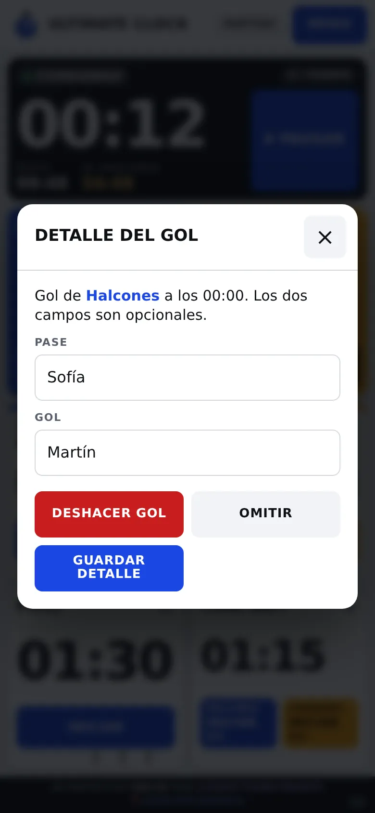
Detalle del gol
Anotar un gol
Tocá + GOL del equipo que anotó.
Se abre el detalle: escribí o elegí quién dio el pase y quién hizo el gol.
GUARDAR DETALLE lo registra. OMITIR cuenta el gol sin nombres.
Si te equivocaste de equipo, DESHACER GOL lo borra.
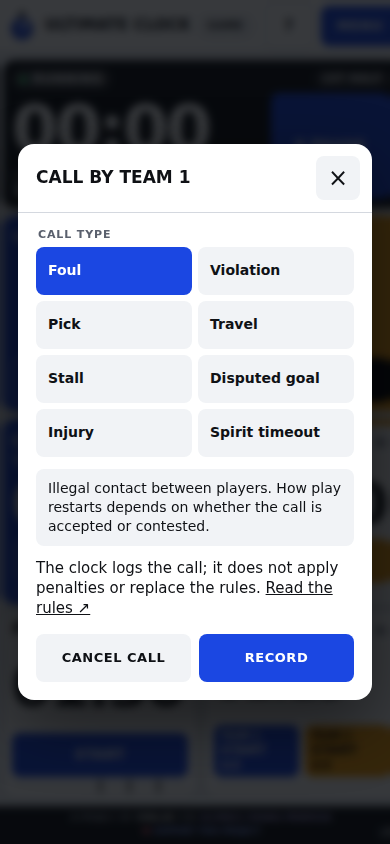
Tipo de llamado
Registrar un llamado
Tocá INICIAR en el llamado del equipo que lo hizo. El tiempo empieza a correr.
Elegí qué fue: Falta, Violación, Pick, Travel, Conteo, Gol discutido, Lesión o Tiempo de Espíritu. Cada uno tiene una explicación corta.
Tocá REGISTRAR. Si fue un error, CANCELAR LLAMADO.
La app solo anota: no decide sanciones. Eso lo resuelven los jugadores según el reglamento.
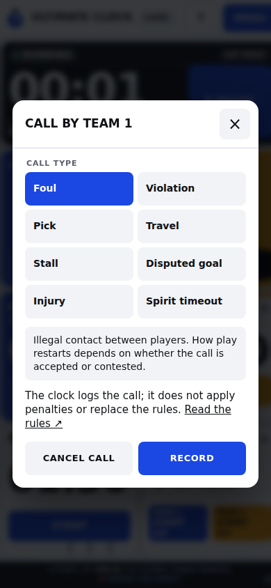
Contadores en marcha
Pull
Tocá INICIAR en Pull cuando los equipos se preparan. Suenan silbatos de aviso:
Tocá el botón del equipo que lo pide y confirmá con INICIAR TIME OUT. Se descuenta uno de su cupo. Al empezar el segundo tiempo el cupo se renueva.
Medio tiempo
Cuando se cumple el primer tiempo, el reloj se detiene y aparece un aviso. Tocá INICIAR MEDIO TIEMPO. Al terminar el descanso, INICIAR SEGUNDO TIEMPO.
Avisos: cada aviso hace sonar el teléfono, vibra (en Android) y la pantalla parpadea. Mientras un reloj corre, la pantalla no se apaga sola.
Importante: si cambiás de app o bloqueás el teléfono, los avisos suenan recién cuando volvés. Dejá la app abierta durante el partido.
5. El menú
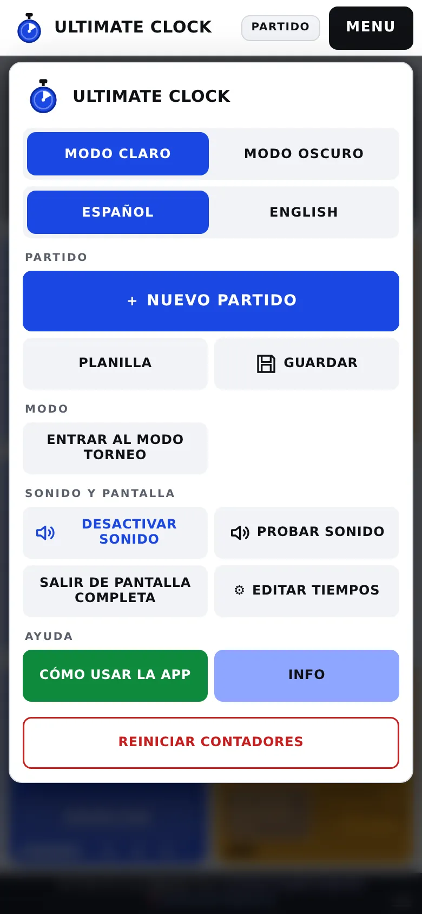
MENU
Tocá MENU arriba a la derecha.
MODO CLARO / MODO OSCURO
Claro para el sol; oscuro para la noche o un gimnasio.
ESPAÑOL / ENGLISH
Cambia el idioma.
＋ NUEVO PARTIDO
Empieza otro partido.
PLANILLA
Todo lo que pasó en el partido y los botones para exportar.
GUARDAR
Cierra el partido y lo guarda en la lista de planillas.
ENTRAR / SALIR DEL MODO TORNEO
Pasa de un modo al otro.
ACTIVAR SONIDO · PROBAR SONIDO
Prende el sonido y hace sonar una prueba.
PANTALLA COMPLETA
Oculta las barras del navegador.
⚙ EDITAR TIEMPOS
Crea o cambia perfiles de tiempos.
CÓMO USAR LA APP
Recorrido guiado sobre el tablero.
MANUAL DE USUARIO
Este manual.
REINICIAR CONTADORES
Pone el partido actual en cero (pide confirmar). No borra las planillas guardadas.
6. Planilla y exportar
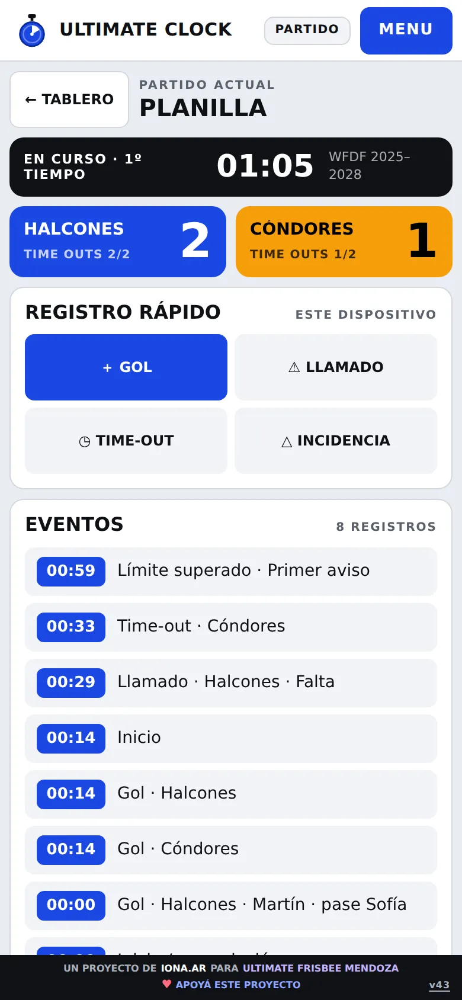
Planilla
MENU → PLANILLA muestra el tanteador, los time outs que quedan y la lista de eventos con su minuto: goles, llamados, time outs y avisos.
Desde REGISTRO RÁPIDO también podés anotar goles, llamados, time outs e incidencias (cualquier otra cosa que quieras dejar escrita).
Exportar
PDF: para imprimir o mandar a la organización.
CSV: para abrir en Excel o Google Sheets.
JSON: copia de seguridad completa.
ENVIAR POR WHATSAPP: manda el resumen del partido.
Guardar el partido
Al final tocá GUARDAR. El partido queda cerrado y aparece en Planillas guardadas, donde podés abrirlo, exportarlo o borrarlo.
Si hay un pull, llamado o time out corriendo, la app espera a que termine antes de guardar.
7. Modo torneo
Sirve para un torneo o una liga: cargás los equipos y jugadores una sola vez, y la app arma sola la tabla de posiciones y la de goleadores.
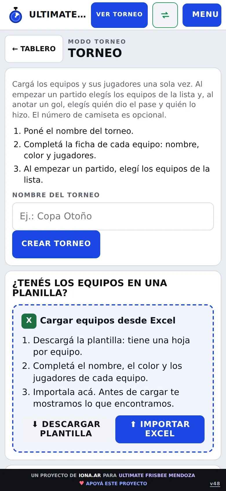
Crear o importar
Crear el torneo
En la bienvenida elegí MODO TORNEO, o MENU → ENTRAR AL MODO TORNEO.
Escribí el nombre (por ejemplo "Copa Mendoza 2026") y tocá CREAR TORNEO.
¿Alguien ya lo cargó en otro teléfono? Tocá IMPORTAR ARCHIVO DE TORNEO (ver Exportar e importar).
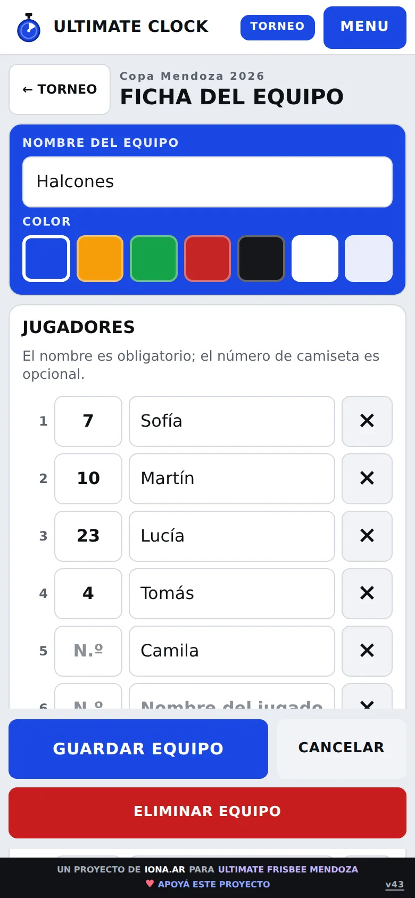
Ficha del equipo
Cargar equipos y jugadores
Tocá ＋ AGREGAR EQUIPO.
Escribí el nombre y elegí el color.
En cada fila: número (opcional) y nombre del jugador. ＋ AGREGAR JUGADOR suma filas.
¿Tenés la lista en un mensaje? Pegala en CARGAR LISTA, un jugador por renglón.
Tocá AGREGAR EQUIPO para guardar la ficha.
Para corregir un equipo, tocalo en la lista y se abre la misma ficha.
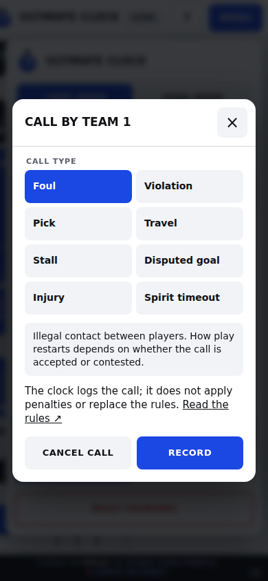
Pantalla del torneo
La pantalla del torneo
Mis torneos: si tenés más de uno, tocá el nombre para cambiar.
Equipos: la lista, con cuántos jugadores tiene cada uno.
Tiempos del torneo: todos los partidos del torneo usan este perfil.
Posiciones, Resultados, Goleadores y pases: se completan solos al guardar partidos.
Archivo del torneo: exportar, importar, cambiar nombre o eliminar.
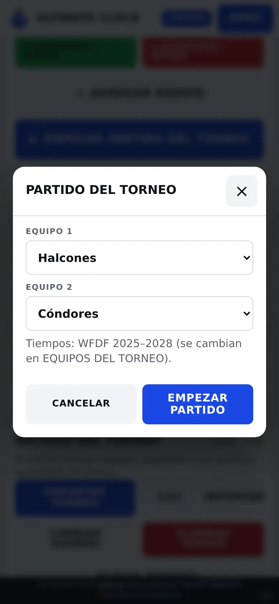
Elegir equipos
Jugar un partido del torneo
Tocá ▶ EMPEZAR PARTIDO DEL TORNEO (hacen falta al menos dos equipos).
Elegí Equipo 1 y Equipo 2 de las listas y tocá EMPEZAR PARTIDO.
Usá el tablero igual que siempre.
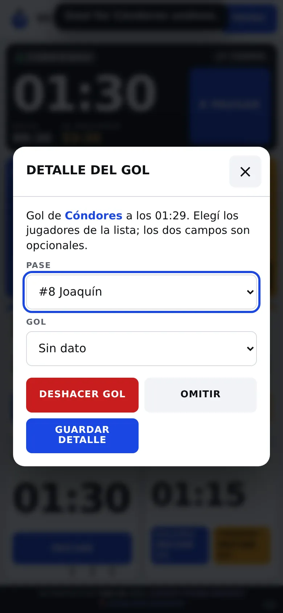
Gol con lista de jugadores
En cada gol, elegí de la lista quién dio el pase y quién hizo el gol. Primero el pase: al elegir el gol el cuadro se cierra solo.
Al final, MENU → GUARDAR. Recién ahí el partido suma en las tablas.
Posiciones y goleadores
Posiciones y goleadores
PJ: partidos jugados · DG: diferencia de goles · PTS: puntos (victoria 3, empate 1).
Debajo de cada equipo: G ganados, E empatados, P perdidos y los goles a favor y en contra.
Goleadores y pases: cuenta solo los goles donde elegiste al jugador de la lista.
8. Exportar e importar torneos
Archivo del torneo
El torneo vive solo en tu teléfono. El archivo del torneo sirve para pasarlo a otro teléfono, juntar los partidos de varias canchas o guardar una copia.
Qué incluye el archivo
Nombre del torneo, equipos, colores, jugadores, el perfil de tiempos y todos los partidos guardados del torneo. Es un archivo .json: no hace falta abrirlo, solo pasarlo.
Exportar (mandar)
Entrá al torneo y bajá hasta Archivo del torneo.
Tocá EXPORTAR TORNEO. El teléfono lo guarda en Descargas (Android) o Archivos (iPhone).
Mandalo por WhatsApp o mail como documento: en WhatsApp, 📎 → Documento → elegí el archivo.
Importar (recibir)
Guardá el archivo que te mandaron en el teléfono (en WhatsApp: abrilo y Guardar).
En la app: MENU → ENTRAR AL MODO TORNEO → IMPORTAR.
Elegí el archivo. Aparece un aviso con cuántos equipos y partidos nuevos se cargaron.
¿Qué pasa al importar?
Torneo nuevo para vos: se agrega a Mis torneos y queda abierto. Tus otros torneos no se tocan.
Torneo que ya tenías: la app pregunta si querés reemplazarlo. Los equipos y jugadores pasan a ser los del archivo.
Partidos: siempre se suman. Si un partido ya estaba, no se repite.
Varias canchas a la vez: la organización arma el torneo y manda el archivo a cada mesa. Cada mesa lo importa, juega y guarda sus partidos. Al final del día, cada mesa exporta y manda su archivo, y la organización los importa uno por uno: se juntan todos los partidos y las tablas quedan completas.
Antes de importar un torneo que ya tenías, revisá que no hayas cambiado equipos o jugadores en tu teléfono: el archivo los reemplaza. Los partidos guardados nunca se pierden.
CSV de jugadores
CSV descarga una planilla con cada jugador, su equipo, goles y pases. Se abre con Excel o Google Sheets.
9. Si algo no funciona
No suena.
Subí el volumen, sacá el modo silencio y tocá MENU → ACTIVAR SONIDO y después PROBAR SONIDO. En iPhone, el botón lateral de silencio también apaga la app.
Los avisos llegaron tarde.
El teléfono estaba bloqueado o en otra app. Dejá la app abierta en pantalla.
Dice "Partido abierto en otra pestaña".
La app está abierta dos veces. Cerrá una y tocá Recargar estado actual.
Dice que el almacenamiento no está disponible.
Tocá Descargar respaldo para no perder nada. Suele pasar en modo incógnito o con el teléfono sin espacio.
No aparecen mis partidos o torneos.
Los datos son de cada teléfono y de cada navegador. Si cambiaste de teléfono o de navegador, importá el archivo que exportaste.
"Ese archivo no es un torneo de Ultimate Clock".
Elegiste otro archivo (por ejemplo, el CSV o el JSON de un partido). El del torneo se exporta desde EXPORTAR TORNEO.
10. Palabras clave
Pull
El lanzamiento que inicia cada punto.
Llamado
Cuando un jugador para el juego por una falta, violación u otra situación.
Time out
Pausa que pide un equipo. Hay un cupo por tiempo.
Time cap
Tiempo máximo del partido.
Perfil de tiempos
El conjunto de duraciones: partido, primer tiempo, descanso, time out y llamados.
Tap the button of the team that calls it and confirm. One is taken from its allowance. It resets at the start of the second half.
Halftime
When the first half ends, the clock stops and a notice appears. Start halftime from it. When the break ends, start the second half.
Alerts: each alert plays a sound, vibrates (on Android) and flashes the screen. While a timer runs, the screen does not turn off by itself.
Important: if you switch apps or lock the phone, alerts only sound when you come back. Keep the app open during the game.
5. The menu
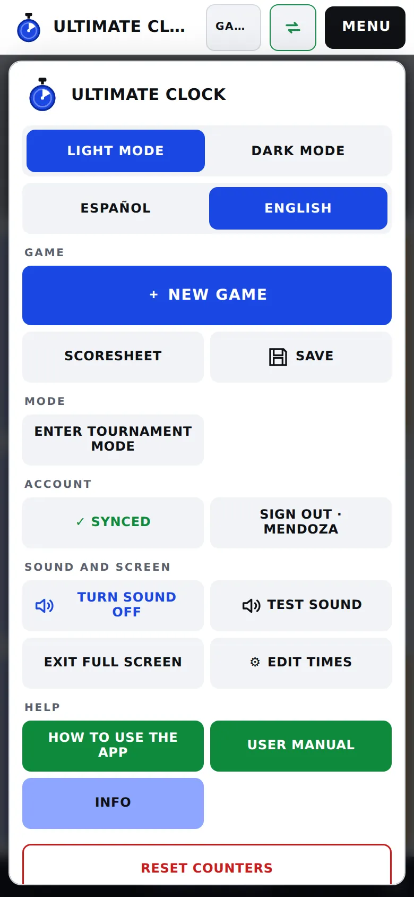
MENU
Tap MENU at the top right.
LIGHT / DARK MODE
Light for sunshine; dark for night or a gym.
ESPAÑOL / ENGLISH
Changes the language.
＋ NEW GAME
Starts another game.
SCORESHEET
Everything that happened in the game, plus the export buttons.
SAVE
Closes the game and stores it in the saved scoresheets.
ENTER / EXIT TOURNAMENT MODE
Switches between modes.
SOUND · TEST SOUND
Turns sound on and plays a test.
FULL SCREEN
Hides the browser bars.
⚙ EDIT TIMES
Create or change time profiles.
HOW TO USE THE APP
Guided tour of the board.
USER MANUAL
This manual.
RESET COUNTERS
Resets the current game (asks to confirm). Saved scoresheets are kept.
6. Scoresheet and export
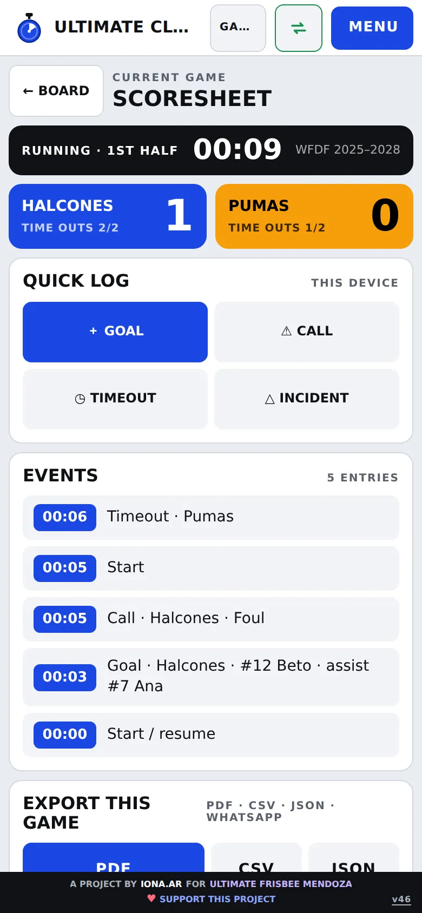
Scoresheet
MENU → SCORESHEET shows the score, the time outs left and the list of events with their minute: goals, calls, time outs and alerts.
From the quick log you can also add goals, calls, time outs and incidents (anything else you want written down).
Export
PDF: to print or send to the organizers.
CSV: to open in Excel or Google Sheets.
JSON: full backup copy.
SEND BY WHATSAPP: sends the game summary.
Save the game
At the end, tap SAVE. The game is closed and listed under saved scoresheets, where you can open, export or delete it.
If a pull, call or time out is running, the app waits until it ends before saving.
7. Tournament mode
For a tournament or a league: load teams and players only once, and the app builds the standings and the scorers table by itself.
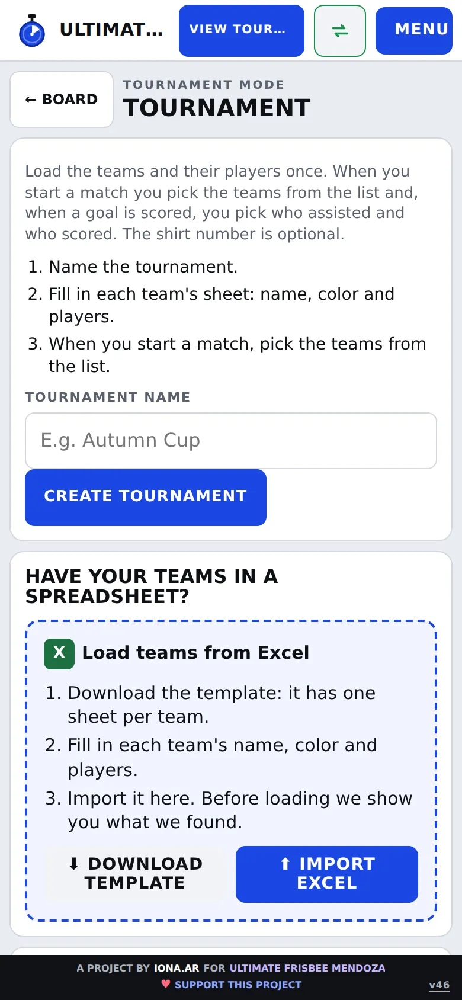
Create or import
Create the tournament
On the welcome screen choose tournament mode, or MENU → ENTER TOURNAMENT MODE.
Type the name (for example "Autumn League") and tap create.
Did someone already load it on another phone? Tap import (see Export and import).
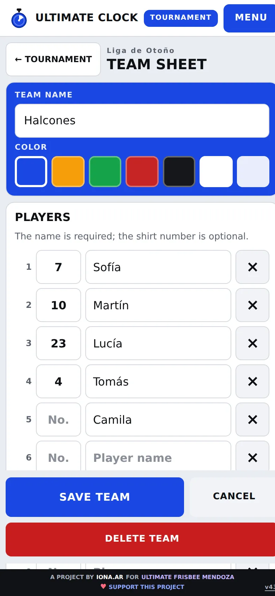
Team sheet
Load teams and players
Tap ＋ ADD TEAM.
Type the name and pick the color.
On each row: number (optional) and player name. Add player adds more rows.
Have the list in a message? Paste it with load list, one player per line.
Tap add team to save the sheet.
To fix a team, tap it in the list and the same sheet opens.
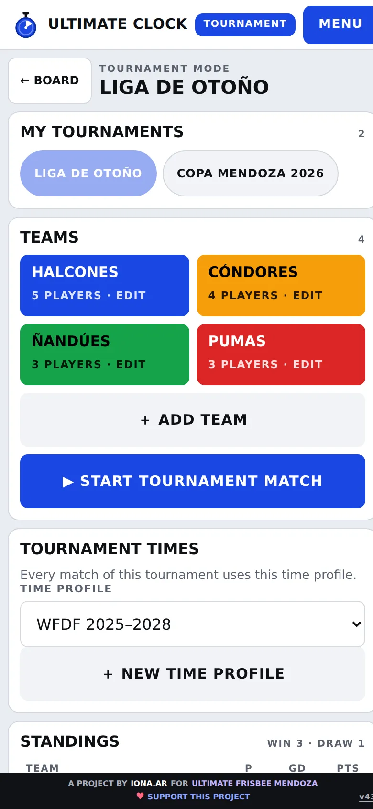
Tournament screen
The tournament screen
My tournaments: if you have more than one, tap a name to switch.
Teams: the list, with how many players each has.
Tournament times: every game in the tournament uses this profile.
Standings, Results, Scorers and assists: filled in automatically when you save games.
Tournament file: export, import, rename or delete.
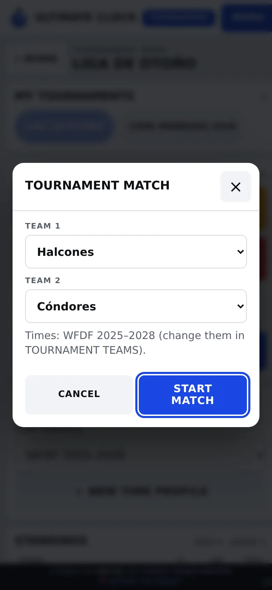
Pick teams
Play a tournament game
Tap ▶ START TOURNAMENT MATCH (you need at least two teams).
Pick Team 1 and Team 2 from the lists and tap START MATCH.
Use the board as usual.
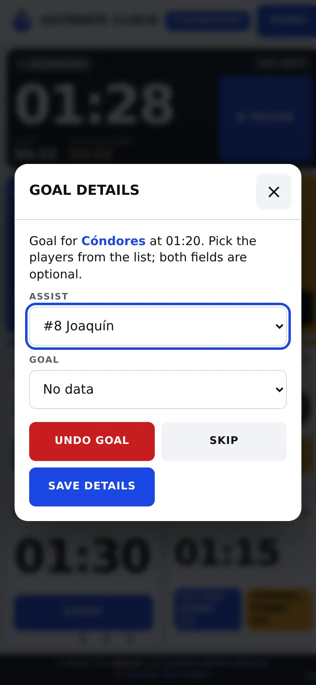
Goal with player list
For each goal, pick the assist and the goal from the list. Assist first: picking the scorer closes the dialog.
At the end, MENU → SAVE. Only then does the game count in the tables.
Standings and scorers
Standings and scorers
Games played, goal difference and points (win 3, draw 1).
Under each team: wins, draws, losses and goals for and against.
Scorers and assists: counts only goals where you picked the player from the list.
8. Export and import tournaments
Tournament file
The tournament lives only on your phone. The tournament file lets you move it to another phone, collect the games from several fields, or keep a backup.
What the file includes
Tournament name, teams, colors, players, time profile and every saved game of the tournament. It is a .json file: you don't need to open it, just pass it on.
Export (send)
Open the tournament and scroll to Tournament file.
Tap EXPORT TOURNAMENT. The phone saves it in Downloads (Android) or Files (iPhone).
Send it by WhatsApp or email as a document: in WhatsApp, 📎 → Document → pick the file.
Import (receive)
Save the file you received on the phone (in WhatsApp: open it and save it).
In the app: MENU → ENTER TOURNAMENT MODE → IMPORT.
Pick the file. A notice says how many teams and new games were loaded.
What happens when you import?
A tournament you don't have: it is added to My tournaments and opened. Your other tournaments are untouched.
A tournament you already have: the app asks whether to replace it. Teams and players become those in the file.
Games: always added. A game you already have is not duplicated.
Several fields at once: the organizers build the tournament and send the file to each field table. Each table imports it, plays and saves its games. At the end of the day, each table exports and sends its file, and the organizers import them one by one: all games come together and the tables are complete.
Before importing a tournament you already have, check you did not change teams or players on your phone: the file replaces them. Saved games are never lost.
Players CSV
CSV downloads a spreadsheet with each player, team, goals and assists. Open it in Excel or Google Sheets.
9. If something goes wrong
No sound.
Turn the volume up, turn silent mode off, then MENU → turn sound on and TEST SOUND. On iPhone, the side silent switch also mutes the app.
Alerts arrived late.
The phone was locked or in another app. Keep the app open on screen.
It says "Game open in another tab".
The app is open twice. Close one and reload the current state.
It says storage is not available.
Tap download backup so you lose nothing. It usually happens in private mode or when the phone is out of space.
My games or tournaments are missing.
Data belongs to each phone and each browser. If you changed phone or browser, import the file you exported.
"That file is not an Ultimate Clock tournament".
You picked another file (for example, a game's CSV or JSON). The tournament file comes from EXPORT TOURNAMENT.
10. Key words
Pull
The throw that starts each point.
Call
When a player stops play for a foul, violation or other situation.
Time out
A break requested by a team. Each half has an allowance.
Time cap
Maximum game time.
Time profile
The set of durations: game, first half, halftime, time out and calls.
Scoresheet
The record of everything that happened in the game.